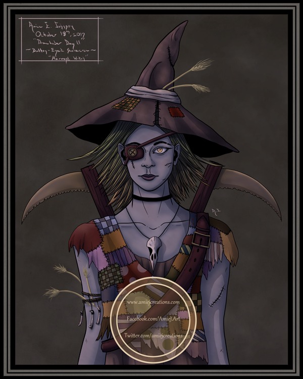

Harvest Witch
This is the harvest witch, a guardian witch who looks after the fields and battles crows to keep the crops safe. She has been through many battles with the crows and she wears the skull of the crow that attacked her face around her neck. This painting was made during the Drawtober Drawing Challenge Day 11 - "Button-Eyed Scarecrow".
(Original painting - 8x10 inches)

Close-up Images
Close-up of the face details.
Close-up of the eye-patch details.